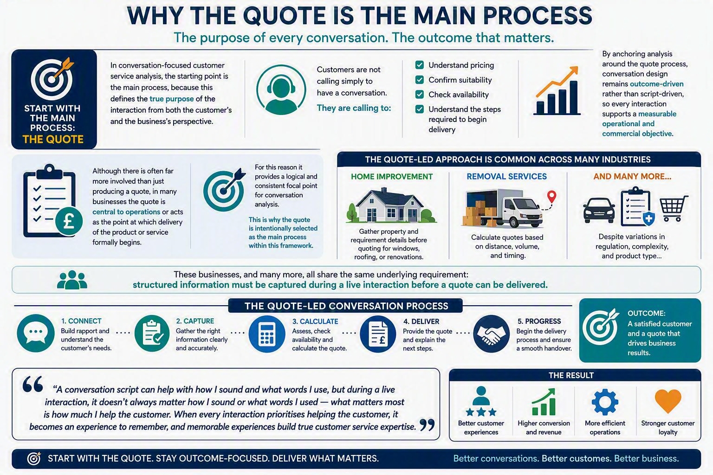
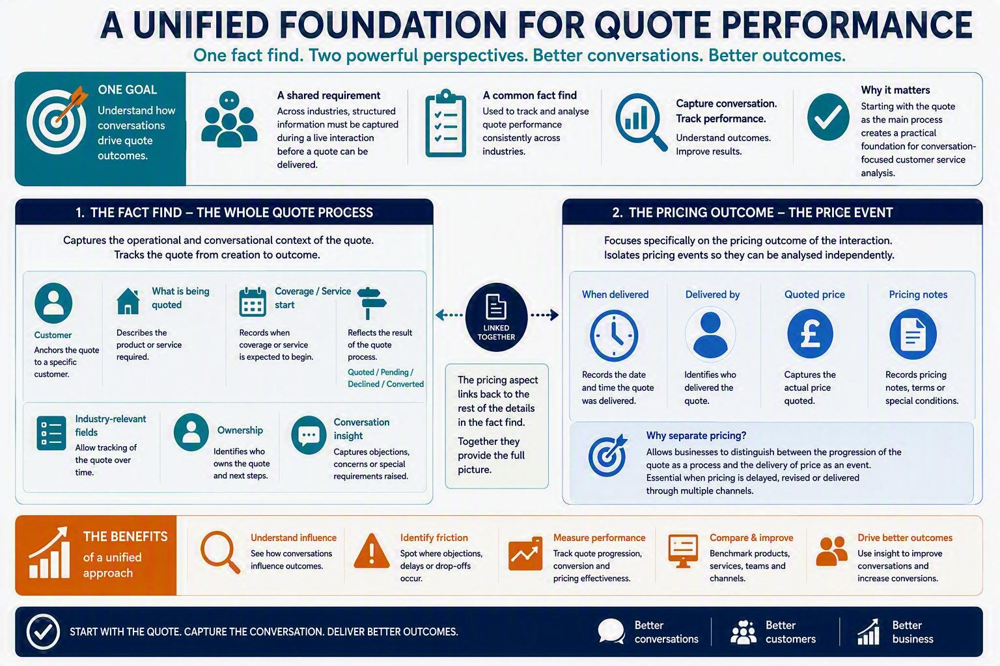
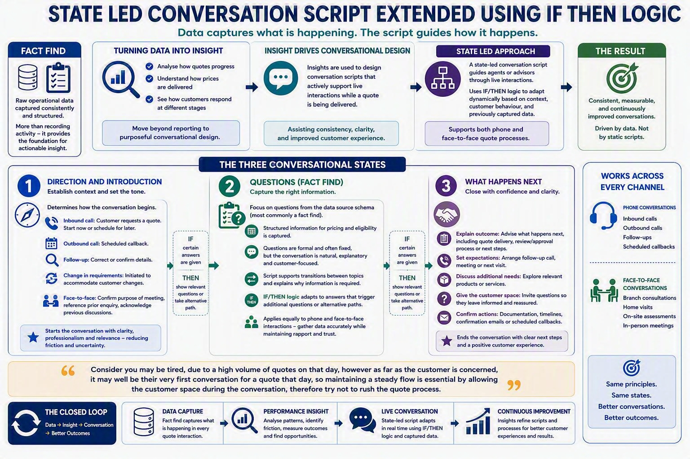
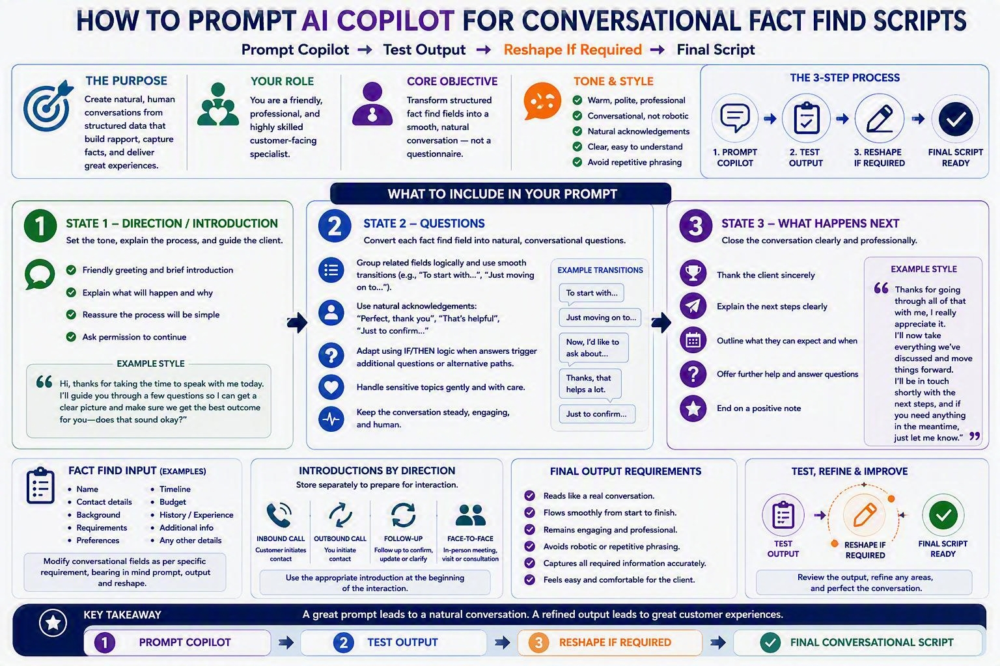

About Learn Data Analysis With Zee
The Learn Data Analysis with Zee initiative is focused on enlightening people about modern data work while staying grounded in the principles of traditional data analysis. It connects established analytical thinking with contemporary tools, practices, and ways of working, helping learners understand both the evolution of data analysis and its practical application today.
This initiative is free to access and is not registered, accredited, or formally certified. It exists purely in an educative spirit — to encourage curiosity, critical thinking, and skill development for anyone interested in learning more about data analysis, regardless of background or experience.
The material is intended to be used constructively: to learn, practise, reflect, and discuss. Learners are welcome to apply the ideas to their own projects and learning journeys, while using sound judgement and ethical practice.
In a friendly but professional spirit, the content should not be mis-used, misrepresented, or presented as original work. It is shared in the spirit of learn, practise, create - learn from this material, practise the ideas, and then go and build something of your own. Natural copyrights apply, as they do to all original educational material, maintaining the work remains respected, credited, and sustainable for the wider learning community.
Customer Service Analysis Stack
Goals Of Customer Service Analysis:
-
Goal A:
To achieve great customer service means to provide customers with help in relation to the main process (quote).
-
Goal B:
The benefits of great customer service is to convert leads that are generated.
-
Goal C:
A business offers services to a customer through the product that they advertise.
Types Of Customer Service Analysis:
-
Conversation Focused Customer Service Analysis:

Main Process: Quote 
Data Storage/Raw Data: Fact Find 
Extract Entities & Attributes State Led Conversation Script Extended Using If Then Logic 
Prompt, Output, Reshape: Conversation Script Design Prompt For Conversational Fact Find Versions Control: Auditing & Renovations
Actionable Insight: Conversational Fact Find Tool
What Now?: Conversational Fact Find Virtual Assistant
-
Customer Relations Focused Customer Service Analysis:
Data Set & Defined Questions: Teams Productivity & Quote Productivity
KPI Dashboard & Actionable Insight: GDPR-Compliant Quote Register
What Now? Quote Process Strategy - From Initialisation To Delivery
DIA Exemption – Low Risk
All outputs within this ecosystem are classified under a DIA Exemption – Low Risk profile.
This means:
- data used is non‑sensitive and appropriate for Copilot consumption
- knowledge artefacts are approved, governed, and auditable
- AI usage remains compliant with internal and regulatory controls
The low‑risk designation enables broader Copilot usage while maintaining trust and accountability.
Assesment - Learn, Practice & Design
Please note: Site under construction